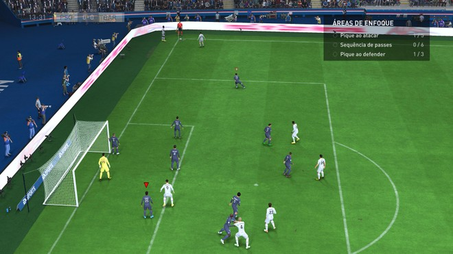

Para combater isso, o controle dos jogadores e o toque de bola são mais consistentes e responsivos, com os zagueiros adotando posicionamentos mais inteligentes e fazendo desarmes mais precisos. Aparentemente, a EA quer incentivar os usuários a jogarem mais pelas laterais, algo que se tornou bem agradável em FIFA 23.
Por mais que essas mudanças pareçam algo brusco, o jogo não é tão diferente de seu antecessor, com as melhorias podendo ser definidas como incrementais ao que já estava estabelecido.
FIFA 23 também foca nos chutes bonitos à distância. O Power Shot é a chave para fazer golaços, onde os jogadores terão alguns segundos para ajeitar o corpo, dar um “chutão” na bola e colocá-la dentro do gol. Entretanto, quem estiver na defesa terá tempo suficiente para efetuar o desarme, equilibrando as disputas.

Outras novidades positivas é a inclusão mais predominante de futebol feminino, com a Super Liga Feminina da Inglaterra e o Campeonato Francês de Futebol Feminino, permitindo jogar com o Chelsea e Lyon. O HyperMotion2 faz a experiência totalmente diferente de jogar com os times masculinos, dando boas doses de realismo.
A derrapada vem do fato de não ser permitido utilizar os times femininos com amigos e torneios, então você ficará limitado a uma temporada inteira ou divisão, sem possibilidade de comprar jogadoras ou utilizá-las em outros modos de FIFA 23.
Olho no lance
No Modo Carreira, os jogadores encontrarão o que já estão acostumados, mas com algumas novidades. Uma delas é a possibilidade de participar de momentos de destaque da partida, ao em vez de jogar os 90 minutos, garantindo que você faça a diferença real em alguns jogos.
Caso você escolha jogar a carreira de jogador, você poderá moldar a sua personalidade para receber bônus a respeito de suas qualidades, baseado no seu estilo de jogo, por exemplo, se você presta assistências ou é aquele que sai driblando e fazendo gols para decidir partidas importantes.
Como técnico, você será responsável por analisar os pontos fracos do time e melhorá-los, enquanto trabalha para realçar os pontos fortes, além de precisar lidar com a insatisfação dos jogadores que ficarem no banco de reservas ou eventuais transferências.
Porém, o principal carro-chefe de FIFA 23 é o modo FUT (FIFA Ultimate Team), assim como dos mais recentes títulos da franquia. Ele traz um novo sistema de química, com o jogador recebendo bônus por ter jogadores de mesmas ligas, clubes e nacionalidades, mas a partir de agora, não é necessário que estejam juntos em campo.
Além disso, não há mais penalidade para colocar em campo um jogador com química zero, permitindo que os jogadores tenham mais possibilidades na hora de montar seu time dos sonhos.
Outra novidade é o modo Moments, que permite ao jogador enfrentar desafios e também, aprender jogadas e outros detalhes de forma simples, prática e rápida, além de ganhar recompensas. Por exemplo, você poderá assumir o papel de Mbappé para marcar um hat-trick em uma partida decisiva.
Gráfico
Para os jogadores que sentem falta do saudoso FIFA Street, há uma boa notícia: FIFA 23 traz o retorno do modo Volta Football. Basicamente, ele coloca times de 3 contra 3 para jogar uma partida de futebol de rua, mas com habilidades e pegada mais arcade, abandonando o realismo.
FIFA 23 utiliza toda a tecnologia para entregar os melhores gráficos da franquia até hoje. Os jogadores são recriados com bastante fidelidade e todos os detalhes da partida, desde o estádio até a torcida, receberam uma atenção especial para tornar a experiência imersiva e fantástica para os fãs de esporte.
Porém, um detalhe que vai desagradar muitos é não haver licenciamento do Brasileirão e nem seus times. Equipes classificadas à Libertadores e Sul-Americana foram incluídas, mas contam com jogadores genéricos, assim como as seleções masculinas e femininas.
Trilha Sonora
Como era de se esperar, a trilha sonora de FIFA 23 é um dos seus fortes, contando com uma seleção de mais de 100 faixas com artistas renomados como Alewya, Bru-C, Danger Mouse & Black Thought, Gorillaz e M.I.A.